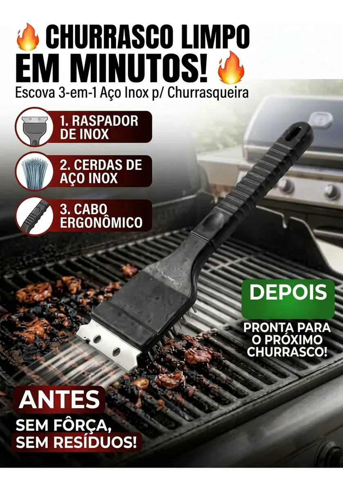
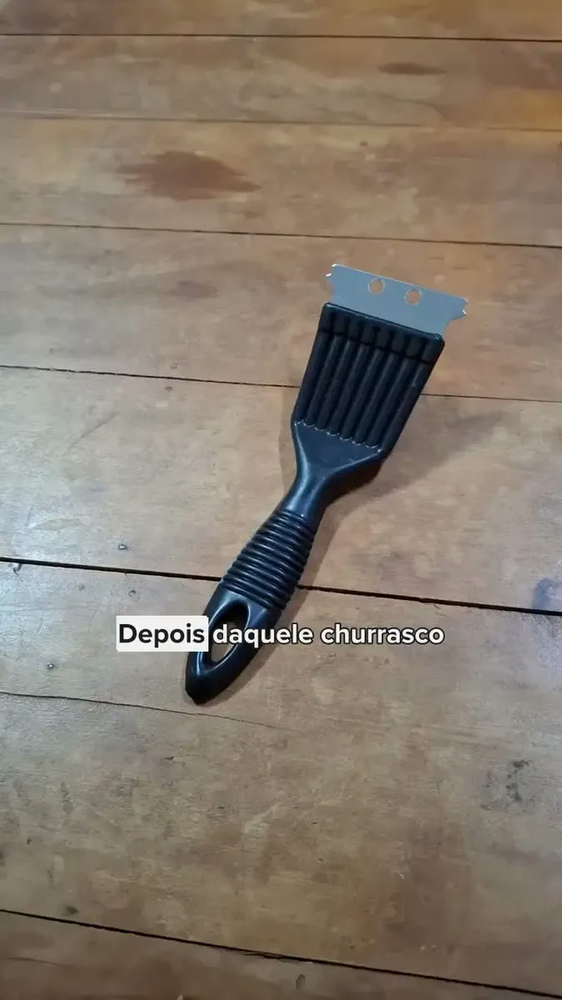
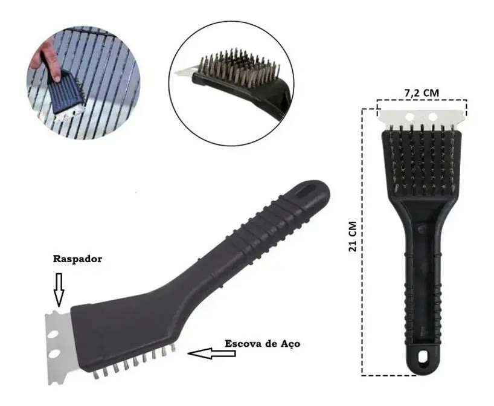

Achado nº 36
Como tirar gordura queimada da grelha sem passar a tarde esfregando?
Escova 3 em 1 de aço inox para limpar grelha de churrasqueira
★ 4,8 · mais de 2.200 avaliações no Mercado Livre



O que diz a página oficial do produto
- É uma escova de limpar grelha com 3 partes numa peça só: raspador de inox na ponta, cerdas de aço inox e cabo de plástico
- O cabo e a cabeça são de plástico polipropileno; as cerdas são de aço inoxidável
- Mede 21,4 cm de comprimento, 7,2 cm de largura e 5,5 cm de altura
- Segundo o anúncio, o raspador ajuda a limpar as áreas mais difíceis da grelha
- Vem 1 escova na embalagem
- No Mercado Livre, tem nota 4,8 com mais de 2.200 avaliações e mais de 10 mil vendidos
Link de afiliado: se você comprar por ele, a Achadaria pode receber uma comissão, sem custo extra para você. Preço, estoque e entrega são da loja e podem mudar; confira lá antes de comprar.